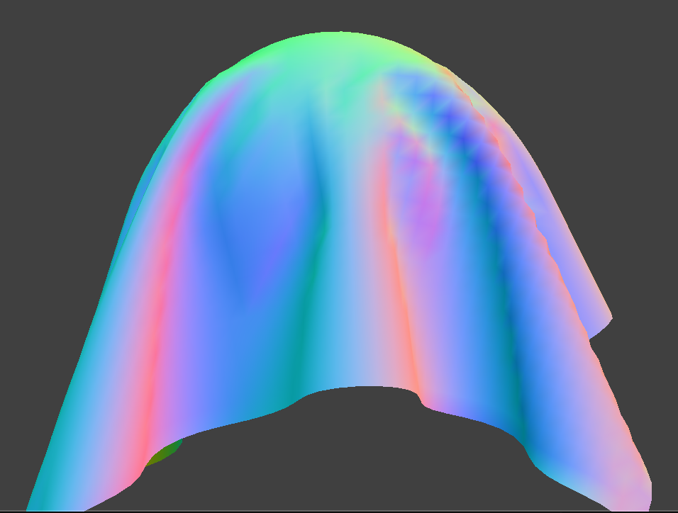

Overview
Give a high-level overview of what you implemented in this project. Think about what you've built as a whole. Share your thoughts on what interesting things you've learned from completing the project.
Part I: Masses and springs
In Part 1, we construct a grid of masses based on its orientation. When initializing the point masses in the grid, we initially set the pinned attribute of all point masses to false and assign positions to point masses in ROW-MAJOR (X-AXIS) ORDER. Subsequently, we iterate through the pinned vector and set the pinned attribute of fixed point masses to true. Next, we create springs according to different geometric features of constraints to apply structural, shear, and bending forces.
Take some screenshots of scene/pinned2.json from a viewing angle where you can clearly see the cloth wireframe to show the structure of your point masses and springs.

|

|

|
Show us what the wireframe looks like (1) without any shearing constraints, (2) with only shearing constraints, and (3) with all constraints.

|

|

|
Part II: Simulation via numerical integration
Ks Explanation
As shown in the screenshot, we respectively set ks to 500, 5000, and 50000. From the running results, we can observe that in the final static state, the smaller the value of ks, the more noticeable the sagging between the two fixed points at the upper edge. Moreover, during the simulation process, we can also notice that the smaller the value of ks, the softer the fabric appears, whereas conversely, the fabric appears stiffer. In summary, we can conclude that the larger the value of ks, the greater the spring tension between point masses, resulting in the aforementioned outcomes.

|

|

|
Density
As shown in the screenshot, we respectively set \( k_s \) to 10, 15, and 30. From the running results, we can observe that in the final static state, the smaller the density, the smaller the wrinkles in the fabric. Conversely, as the density increases, the wrinkles in the fabric become more pronounced. Additionally, during the simulation process, we can also notice that the smaller the density, the lighter the fabric appears to sag. Conversely, the fabric appears heavier as the density increases.

|

|

|
Damping
As shown in the screenshot, we respectively set damping to 0.057, 0.2, and 0.5. From the simulation process, we observed that as the damping value increases, the time it takes for the fabric to fall from the initial state to a static position decreases. Conversely, when the damping value is smaller, the time for the fabric to fall from the initial state to a static position increases, and the oscillations become more pronounced.
|
|

|

|
Show us a screenshot of your shaded cloth from scene/pinned4.json in its final resting state! If you choose to use different parameters than the default ones, please list them.

Part III: Handling collisions with other objects
In this part, we added support for cloth collision with other objects in the scene, specifically with a sphere and a plane. This makes the simulation more interesting and realistic as the cloth can now interact with other objects.
Handling Collisions with Spheres
For collision handling with spheres, we implemented the Sphere::collide method. This method takes in
a point mass and adjusts its position if it intersects with or is inside the sphere. The collision resolution is
done as follows:
- Tangent Point Calculation: We compute where the point mass should have intersected the sphere by extending the path between its 'position' and the sphere's origin to the sphere's surface. This intersection point is called the tangent point.
- Correction Vector: We compute the correction vector needed to be applied to the point mass's
last_positionin order to reach the tangent point. - Position Update: Finally, we let the point mass's new
positionbe itslast_positionadjusted by the above correction vector, scaled down by friction (i.e., scaled by(1 - f)).
Test Results
Sphere Collision: We tested our implementation with the sphere.json scene file. The
cloth falls on a sphere and drapes itself over it before coming to rest. We tested with different values of the
spring constant ks (5000, 500, and 50000) and observed the differences in the results. (Screenshots
needed)
|
|
|

|
Plane Collision: We also tested our implementation with the plane.json scene file.
The cloth falls slowly onto the plane and stops at its surface, lying peacefully at rest. We added some colorful
creativity to the cloth for visual appeal. (Screenshot needed)

Part IV: Handling self-collisions
In this part, we implemented cloth self-collision to prevent the cloth from clipping through itself when it falls or folds on itself. This is achieved by implementing spatial hashing, which allows for efficient collision detection among the point masses of the cloth.
Spatial Hashing
We built a hash table that maps a float to a vector, representing all of the point
masses that are in a specific 3D box volume. This allows us to quickly find potential candidates for collision and
apply a repulsive force if any pair of point masses are too close to each other.
Self-Collision Handling
For each point mass, we look up potential candidates for collision using the hash table. If a pair of point
masses are within 2 * thickness distance apart, we compute a correction vector to adjust the position
of the point mass, ensuring that they remain at a safe distance from each other.
Test Results
We tested our implementation with the selfCollision.json scene file. The cloth now folds on itself
without clipping through, resulting in a more realistic simulation.
However, we observed that the cloth continues to flatten out over time rather than coming to a natural stop due to the lack of damping spring forces in our model. This is expected behavior for our simulation.
Part 4 Deliverables
Show us at least 3 screenshots that document how your cloth falls and folds on itself, starting with an early, initial self-collision and ending with the cloth at a more restful state (even if it is still slightly bouncy on the ground).
|
|

|
|
|
|
Vary the density as well as ks and describe with words and screenshots how they affect
the behavior of the cloth as it falls on itself.
|
|
|
|
|
|
|
|
Part V: Shaders
Shader Description
A shader program is specialized software designed for GPUs that manipulates how graphics are rendered, particularly for creating visual effects, lighting, and textures. It typically involves two key components: the vertex shader, which transforms 3D model vertices to 2D screen coordinates and can alter vertex properties for effects like object deformations; and the fragment shader, which determines the color of each pixel by calculating lighting and material effects based on the transformed vertices. Together, these shaders allow for the realistic depiction of 3D scenes, handling everything from simple color applications to complex simulations of light interaction with different materials, thereby creating detailed and immersive visual experiences in video games and other graphical applications.
Blinn-Phong Shading Model Explanation
The Blinn-Phong shading model is a refinement of the Phong shading model, designed to simulate the appearance of light interacting with surfaces in a more computationally efficient manner. It modifies the way specular reflections (the shiny spots seen on surfaces where light reflects directly) are calculated by introducing the concept of a "halfway vector." This vector is the normalized average between the direction of the light source and the direction from the surface to the viewer. By computing the specular component based on the angle between this halfway vector and the surface normal, rather than the angle between the reflection of the light vector and the viewer's direction as in the original Phong model
Blinn-Phong Screenshots

|

|

|

|
Comparison of Bump/Displacement Coarseness
Bump mapping and displacement mapping are techniques used to enhance surface texture in 3D graphics, each with its own approach to simulating coarseness. Bump mapping alters the surface normals to create the illusion of texture depth without changing the object's geometry, ideal for minor surface details as it is computationally light but doesn't affect the object's silhouette. Displacement mapping, however, modifies the actual geometry based on a map, producing more realistic textures and changes to the object's outline, suitable for significant surface details. While displacement mapping offers more realistic results by affecting how the surface interacts with light and shadows, it is computationally heavier compared to bump mapping
Bump Mapping Screenshots (Sphere and Cloth)
/Bump mapping on cloth.png)
|
/Bump mapping on sphere.png)
|
/Bump mapping on sphere1.png)
|
Displacement Mapping Screenshots
/Displacement mapping on sphere1.png)
|
/Displacement mapping on sphere2.png)
|
Mirror Screenshots (Both Cloth and Sphere)
/Mirror on cloth.png)
|
/Mirror on sphere2.png)
|
/Mirror on sphere1.png)
|
Texture Mapping Screenshot with Custom Texture Map

|

|